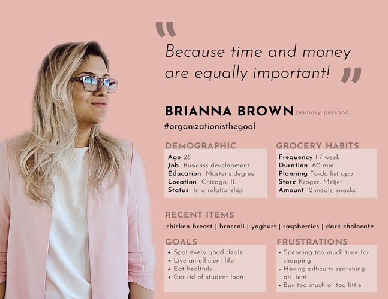
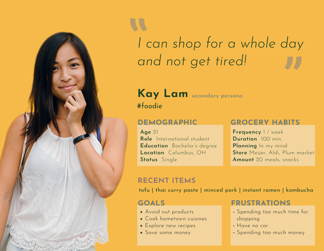
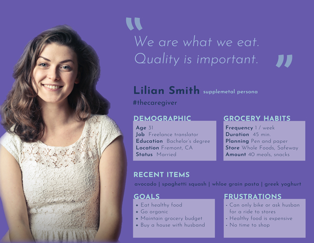
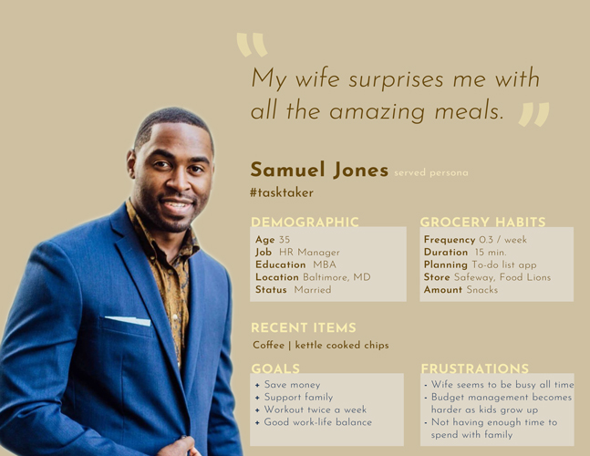
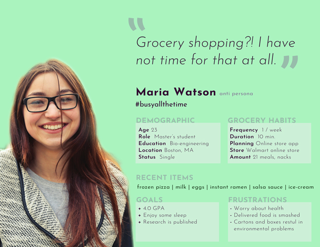
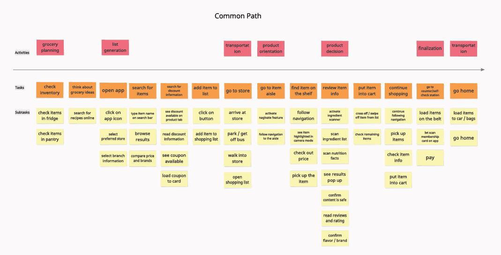
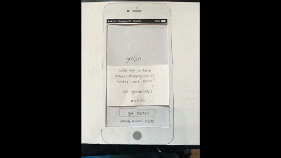

groGo
For the interaction design course project, I design a mobile experience that addresses the inefficiency during in-store grocery shopping.
This is an ongoing project.
Problem Statement
According to The Time Use Institute (2008) survey, US shoppers spend an hour per week
doing grocery shopping. However, 92% of shoppers in the US still prefer shopping grocery in-store over online shopping (ICSC,2018). Undoubtedly, shopping in physical stores allows one to have more control of what he/she gets -- you can pick the freshest looking produce, or spot special deals that are not listed online. But what about control over time and budget?
To address the issues in inefficient grocery shopping in physical stores, I am designing a mobile application that streamlines the shopping experience to help in-store shoppers buy fresher food while saving both time and money.
Role
This is an individual design project. However, short discussions and progress sharings have been held in class where feedback from other classmates are given.
In order to understand people's pain points doing grocery shopping, I collected and analyzed both quntitative and qualitative data for further ideation.
1. Small Sample Survey
A short user needs survey was conducted online to learn in-store shoppers' challenges. The reponses from five-point Likert scaled questions show that 10 out of 16 people reported to have often or always stayed longer than they expetected shopping groceries. Additionally, three problems have often or always happened to more than half of the 10 respondents during their shopping expereince:
- Having to return to previous aisles because of missing an item
- Having difficulty locating an item in store
- Spending a lot of time comparing similar products
2. User Interviews
In addition to the survey, I also interviewed four different shoppers individually. By having them walk me through their last shopping experience, I have come to understand that not everyone is looking for efficient shopping: for example, one of the interviewee described how she actually indulges herself spending quite some time browsing grocery items in store, because that is one of the few enjoyments should could have living a busy life. Some of the new findings that emerged from the interviews are:
- Shoppers who only shop for themselves are buying much more than needed
- Some shoppers would choose to shop online once a while because there is a promotion
- One shopper has a different diet from her husband, and would thus have to pay extra attention during shopping
3. Personas
From the above research, I was able to delinate different types of shoppers and therefore developed a set of different personas for reference during the design. These personas are primary persona, secondary persona, supplemental persona, served persona, and anti persona as shown below:
    
1. Brainstorming
During the first phase of ideation, I started to brainstorm potential solutions that could possibly meet the users needs. For example, several grocery stores already have their own mobiel apps that include item locations for their shoppers. However these apps only include aisle locations. Considering the length of an aisle and the size of a grocery store -- the average size of the newly built Kroger combination stores from 2012 to 2016 is 71,000 square feet – that’s about 15 basketball courts (The Kroger Co., 2017), such information may not really help save shoppers' time. Another potential solution is pickup service, where users can select desired items prior to their shopping trips and pick up groceries once they arrive. This solution balances users' need for saving time and having fresher food, but the incurred service fee may not save shoppers money. Some other brainstormed ideas include smart shopping carts, interactive shelves, and professional hired shopper service.
In the end, I have considered user needs and the contraints, and decided to opt for designing 'groGo' a mobile app that serves as a one-stop soltution for in-store shoppers.
2. Scenarios
For each persona, I have developed a scenario describing how the persona may use 'groGo' to complete their tasks. You can read my scenarios here.
3. Story Maps
From the developed scenarios, I then further laid out story maps for each persona, and then created a common story map which represents the most important tasks using the app.
4. Paper Prototype

After constructing the story maps, I then moved on to the prototyping stage. Beofre delving into digital prototype, a paper-based prototype model was first created to allow quick user testing and conceptualization.
(Coming up: initial testing results & digital prototype)